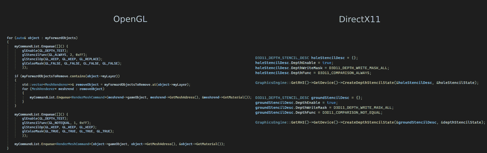

At TGA we have a specialization course at the end of year two. In this course we got to pick a subject to specialize in and learn more about.
I chose to make a system that lets you destoy holes in a small cabin to then let new objects thrown at it also pass trough seemlessly.
In this project i had to overcome a lot of challenges, one of the biggest being how the physics system is suppose to just let through objects when it goes into contact with the hole.
I chose to make a system that lets you destoy holes in a small cabin to then let new objects thrown at it also pass trough seemlessly.
In this project i had to overcome a lot of challenges, one of the biggest being how the physics system is suppose to just let through objects when it goes into contact with the hole.

There are many ways you can do this, one of the more popular being let through the object in question if it collides with a trigger with the specified tag or layer.
This solution comes with a few problems, one being the performance of the process from contact to let through.
The object first checks if it collides with the trigger, if it does then check if it is inside the object the hole is attached to. This makes two operations that should be able to be done in just one.
There is another problem, the object will disable its collider right when it touches the trigger and you will fall right through the mesh on the edge of the hole wich just wont look right like the image to the right.
We also need to check all triggers in the world with this approach as well.
This solution comes with a few problems, one being the performance of the process from contact to let through.
The object first checks if it collides with the trigger, if it does then check if it is inside the object the hole is attached to. This makes two operations that should be able to be done in just one.
There is another problem, the object will disable its collider right when it touches the trigger and you will fall right through the mesh on the edge of the hole wich just wont look right like the image to the right.
We also need to check all triggers in the world with this approach as well.

We are able to the above in just one step. this is by using physx onContactModify, a built in physx collision modifier.
The onContact mocify is an overide function you can supply physx to directly be able to modify how physx handles collisions,
so instead of checking trigger then let through we can let through the collider right when it finds a contact point inside a shape where collisions should be ignored.
Not only do we only use one operation per collision check and the collisions are more accurate with only letting the actual contact points through. Because we know what two objects collide, we can then optimise the whole process by only checking if there are holes attached to the collider we touched.
After we know the contact point is inside a hole then we tell the point with setSeparation() that from the one point to the other has a distance of 1, which means no contact and thus keep moving with the current velocity.
Not only do we only use one operation per collision check and the collisions are more accurate with only letting the actual contact points through. Because we know what two objects collide, we can then optimise the whole process by only checking if there are holes attached to the collider we touched.
After we know the contact point is inside a hole then we tell the point with setSeparation() that from the one point to the other has a distance of 1, which means no contact and thus keep moving with the current velocity.

Now we have the "Hard part" over, the physics. The phyiscs works well and if we hover the sphere over the objects they fall through the ground, image to the right.
To the right we have an example of what the result of oncontact modify gave.
Next step is actually making a visual cut in the mesh. A way to do this is by using stencil testing plus layers to only write color where there are no holes.
This is quite easy to do in both DirectX11 and OpenGL, both of wich i have written a simple game engine in to test the different development enviroments and be able to make it multiplatformed.
Next step is actually making a visual cut in the mesh. A way to do this is by using stencil testing plus layers to only write color where there are no holes.
This is quite easy to do in both DirectX11 and OpenGL, both of wich i have written a simple game engine in to test the different development enviroments and be able to make it multiplatformed.

Below i have two different implementations for the two different graphics API i talked about before, OpenGL and DirectX11.
The only difference is in opengl we set all stencil settings right inline while in dx 11 we create them before and set them directly.
I would say that the impementation of OpenGL version is easier to understand and can also be more readable in my opinion.
Short explanation of whats happening is we first sort all render components, then get each layer one by one and render the objects on the layer to render from back to forward with layer in consideration
